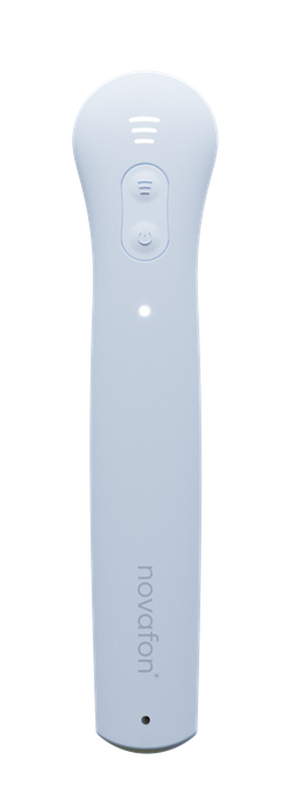
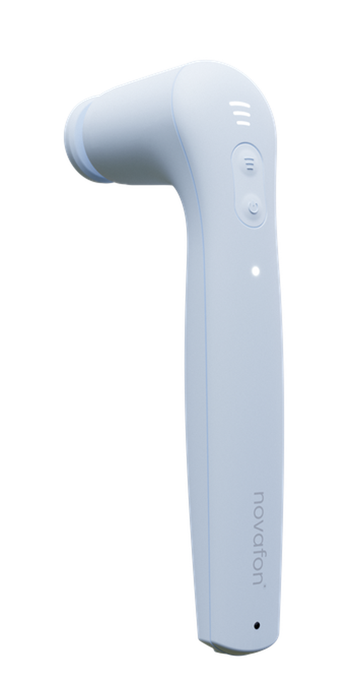
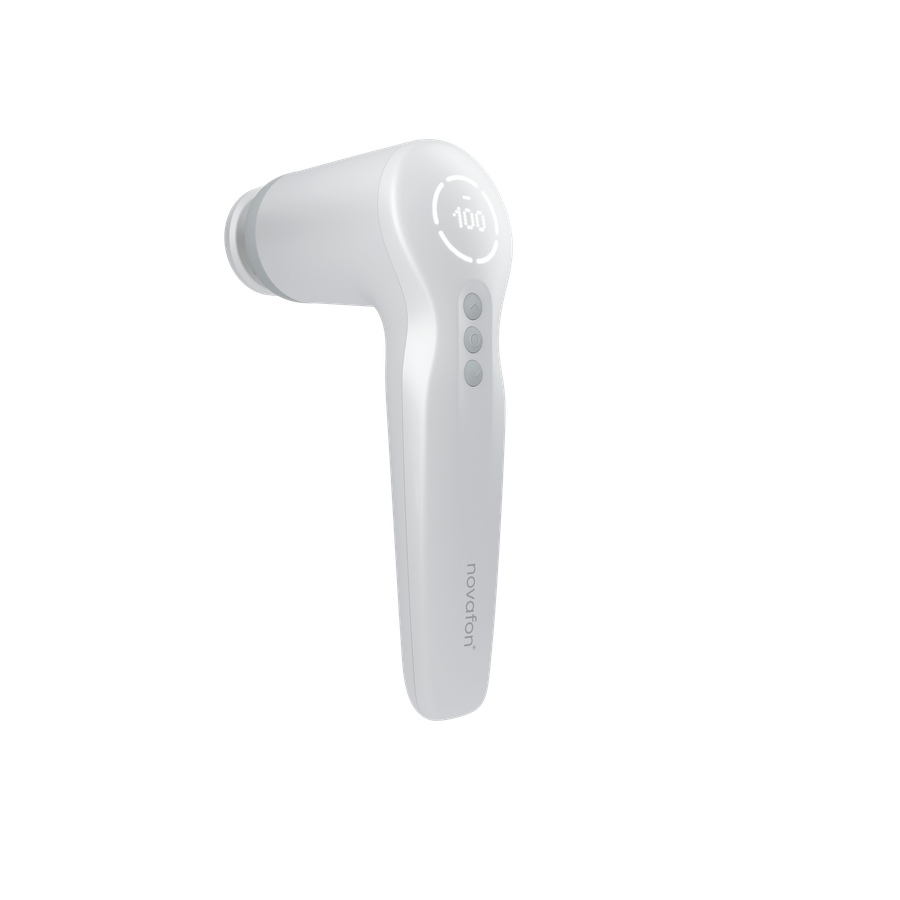
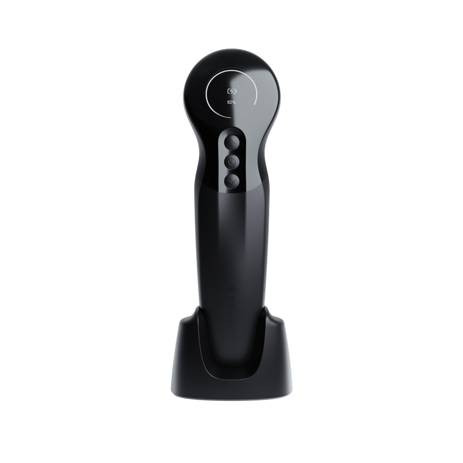
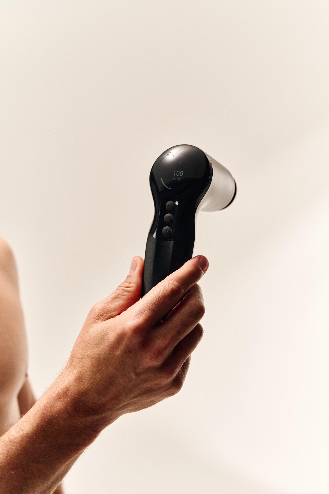

Après une journée assise
Dos & nuque
Un massage local pour offrir une pause aux zones sollicitées par les écrans et les longues journées assises.
Massage vibratoire · Fabriqué en Allemagne
Posez NOVAFON sur la zone qui en a besoin et choisissez votre intensité. Une routine simple pour détendre le dos, la nuque ou les jambes, chez vous.
Au plus près · 100 / 50 Hz
Une vibration mécanique régulière, transmise localement jusqu'à 6 cm selon le modèle et les mesures du fabricant.*
*Valeur technique annoncée par le fabricant ; le ressenti varie selon la zone et l'utilisateur.
Une application locale, sans pression excessive, pour intégrer la détente à votre journée, à la maison comme au cabinet.
Un massage local pour offrir une pause aux zones sollicitées par les écrans et les longues journées assises.
Le mode 50 Hz accompagne le retour au calme après l'effort.
50 HzL'embout disque diffuse la vibration sur une large surface, sans pression.
Un massage local agréable en fin de journée, du mollet à la cuisse.
Une application délicate autour de l'articulation, pour une sensation de confort au quotidien.
L'embout nid d'abeille sur la voûte plantaire, après une journée debout.
Une routine douce pour entretenir une sensation d'aisance et de détente au quotidien.
Un appareil qui peut s'intégrer à la pratique des kinésithérapeutes et autres professionnels formés.
CabinetUne vibration mécanique locale dont vous modulez l'intensité, sans avoir à exercer une pression appuyée.


L'essentiel
100 Hz, 3 intensités, format léger et poignée d'extension pour atteindre le dos.
En savoir plus
Le polyvalent
Deux fréquences, cinq intensités et une ergonomie pensée pour les grandes zones musculaires.
En savoir plus
Le haut de gamme
Trois fréquences, cinq intensités et réglages étendus via l'application pour un usage régulier ou professionnel.
En savoir plus| one light | max | max+ | |
|---|---|---|---|
| Fréquences | 100 Hz | 100 / 50 Hz | 100 / 75 / 50 Hz |
| Niveaux sur l'appareil | 3 | 5 | 5 |
| Réglages via l'application | · | · | Jusqu'à 15 par fréquence |
| Batterie | 2 400 mAh | 5 000 mAh | 5 000 mAh |
| Autonomie indicative | Jusqu'à 3,5 h | Jusqu'à 3,5 h | Jusqu'à 3,5 h |
Faites défiler le tableau horizontalement →

Réglez d'abord l'appareil à faible intensité, puis ajustez-le au ressenti de la personne et à la zone travaillée.Conseil d'utilisation : la notice reste la référence
Les appareils NOVAFON présentés ici sont des dispositifs médicaux marqués CE, conçus et fabriqués en Allemagne. Lisez intégralement la notice du modèle choisi avant la première utilisation.
Quelques minutes par zone, en commençant par l'intensité la plus basse. L'appareil alterne 20 min de fonctionnement et 15 min de pause. Suivez la notice livrée.
Ne pas utiliser sur une plaie ouverte, une inflammation aiguë, une thrombose, une tumeur, ni près d'un implant. Contre-indiqué pendant la grossesse ou en cas de stimulateur cardiaque. En cas de douleur d'origine inconnue, demandez un avis médical.
Jusqu'à 3,5 heures selon le modèle et l'intensité, soit plusieurs séances entre deux charges.
Carte bancaire et PayPal. Livraison offerte dès 100 € en France métropolitaine. Essai satisfait ou remboursé pendant 30 jours.
Recevez le code de bienvenue, nos conseils d'utilisation et les actualités NOVAFON France.